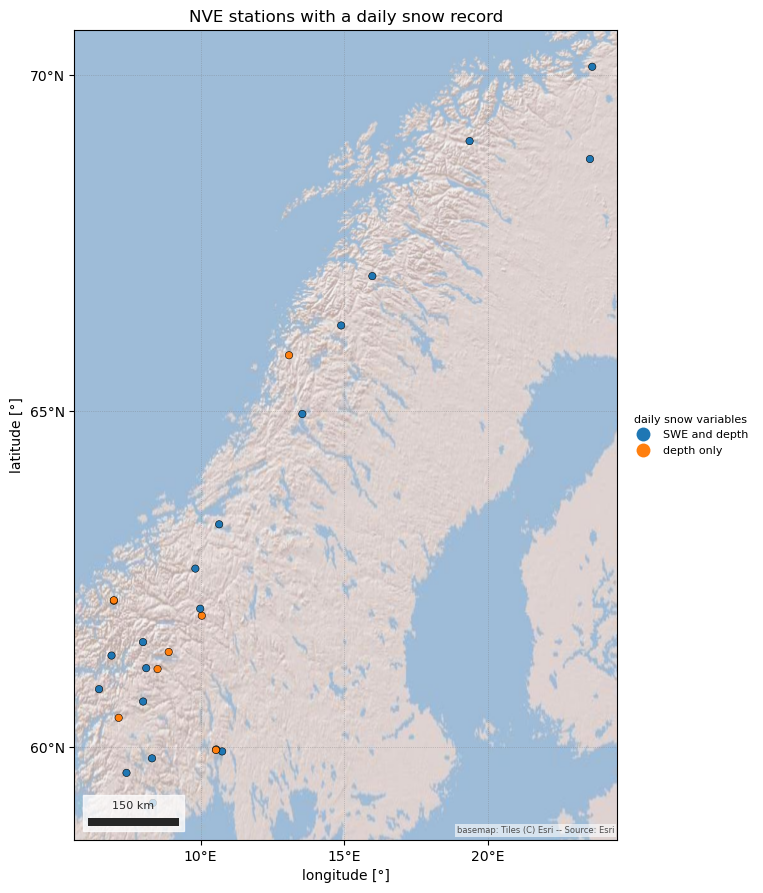
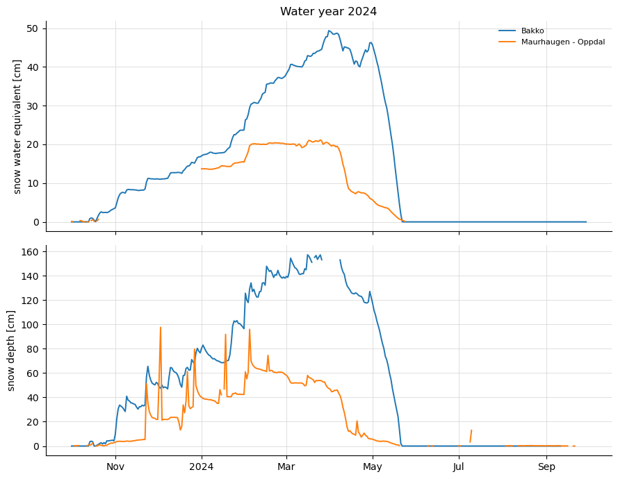

Note
Go to the end to download the full example code.
Norwegian snow stations (NVE HydAPI)#
The Norwegian Water Resources and Energy Directorate (NVE) runs snow pillows
that report SWE and snow depth daily and hourly, plus snow-depth stations at
its climate and hydrometric sites, all served through HydAPI. Parameter 2003
is SWE and 2002 is snow depth; daily_only keeps the stations that carry
either at daily resolution.
There is one route, source="nve", HydAPI v1, and it is the one network of
the five that needs a credential: a free API key in NVE_API_KEY (request
one at https://hydapi.nve.no/). The key is read through the nve auth
provider, so a missing one raises CredentialError with the setup steps
before any request is made. The station inventory does not need it, because
it comes from the published archive.
The figures show the daily stations across Norway, coloured by which snow variable they report, and one water year of SWE and snow depth at two pillows.
import matplotlib.pyplot as plt
import easysnowdata as esd
print(f"easysnowdata {esd.__version__}")
easysnowdata 0.3.3.dev19+gde94f7b3f
Where the product comes from, and whether the key is configured.
for src in esd.catalog.get("nve-stations").sources:
print(f"{src.id:20} {src.title:45} {', '.join(src.requires) or 'no account'}")
print(esd.auth.status().loc["nve"])
nve NVE HydAPI v1 nve
title NVE HydAPI
configured True
how env:NVE_API_KEY
optional False
env_vars NVE_API_KEY
needed_by nve-stations
Name: nve, dtype: object
Every NVE station with a probe-verified daily SWE or snow-depth record. This reads the published inventory, so no key is involved yet.
32 NVE snow stations with a daily record
reports
SWE and depth 21
depth only 11
Not all of them are on the mainland. One is on Svalbard, and HydAPI also serves the four snow stations NVE helps run in Nepal’s Langtang and Mustang valleys, so a box around Norway misses them. The map is the mainland.
mainland = (4.5, 57.5, 31.5, 72.0)
in_norway_gdf = esd.stations.inventory(mainland, networks="nve", daily_only=True)
in_norway_gdf["reports"] = inv_gdf["reports"]
elsewhere_gdf = inv_gdf.loc[~inv_gdf.index.isin(in_norway_gdf.index)]
print(elsewhere_gdf[["name", "latitude", "longitude"]].to_string())
ax = esd.plotting.points(
in_norway_gdf,
column="reports",
legend_label="daily snow variables",
title="NVE stations with a daily snow record",
)

name latitude longitude
code
1977.1.1 Langtang - Lower 28.19214 85.57043
1977.1.4 Langtang - GangaLa 28.15441 85.56250
1977.2.1 Mustang - Upper Snow Station 28.13995 84.54465
1977.2.2 Mustang - Lower snow station 4320mas 28.13093 84.54485
400.18.0 Linnèvatnet 78.06694 13.77737
/home/runner/work/easysnowdata/easysnowdata/docs/gallery/stations/plot_nve_stations.py:54: GeographicAxesWarning: The data are in a geographic CRS (EPSG:4326), so one axis unit is a degree, not a metre. The axes use a latitude-corrected aspect (1/cos(64.7°) = 2.34) so shapes are not stretched; for a true equal-area grid load the product with crs='utm'.
ax = esd.plotting.points(
One water year of SWE and snow depth at two long-running pillows. This is the call that needs the key; the codes are NVE’s dotted station numbers.
obs_ds = esd.stations.load(
["12.142.0", "121.2.0"], variables=["swe", "snwd"], time="2023-10/2024-09"
)
print(obs_ds)
<xarray.Dataset> Size: 22kB
Dimensions: (station: 2, time: 365)
Coordinates: (12/25)
* station (station) <U8 64B '12.142.0' '121.2.0'
network (station) <U3 24B 'nve' 'nve'
name (station) <U19 152B 'Bakko' 'Maurhaugen - Oppdal'
client (station) <U3 24B 'nve' 'nve'
network_code (station) <U3 24B 'NVE' 'NVE'
latitude (station) float64 16B 60.68 62.66
... ...
daily_provenance (station) <U6 48B 'native' 'native'
metadata_fetched_at (station) <U19 152B '2026-09-23 00:00:00' '2026-09-...
station_id (station) <U8 64B '12.142.0' '121.2.0'
* time (time) datetime64[us] 3kB 2023-10-01 ... 2024-09-29
water_year (time) int64 3kB 2024 2024 2024 ... 2024 2024 2024
dowy (time) int64 3kB 1 2 3 4 5 6 ... 361 362 363 364 365
Data variables:
snwd (station, time) float64 6kB 0.0 0.0 0.0 ... nan nan
swe (station, time) float64 6kB 0.0 0.0 0.0 ... nan nan
Attributes:
source: nve
source_id: nve
source_title: NVE HydAPI v1
source_url: https://hydapi.nve.no/api/v1
product_id: nve-stations
title: Norwegian snow pillows and snow-depth stations (NV...
data_citation: Norges vassdrags- og energidirektorat (NVE). Hydro...
license: Norwegian Licence for Open Government Data (NLOD)
easysnowdata_version: 0.3.3.dev19+gde94f7b3f
interval: daily
The archive inventory carries no elevation for NVE stations, so the legend
shows names alone where the other networks’ examples show name (elev m).
fig, axes = plt.subplots(2, 1, figsize=(9, 7), sharex=True)
esd.plotting.timeseries(obs_ds["swe"], ax=axes[0], title="Water year 2024")
esd.plotting.timeseries(obs_ds["snwd"], ax=axes[1], title="", legend=False)
fig.tight_layout()

Norway’s melt season runs later than the western United States at the same elevation, and the snow-depth stations without a pillow are still useful: depth alone tracks the timing of accumulation and melt-out, if not the water.
Total running time of the script: (0 minutes 5.040 seconds)